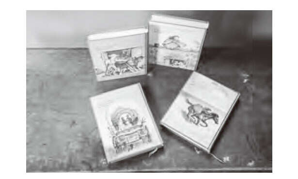
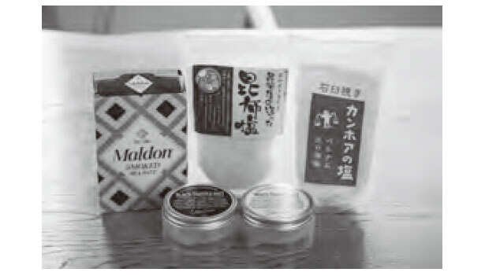
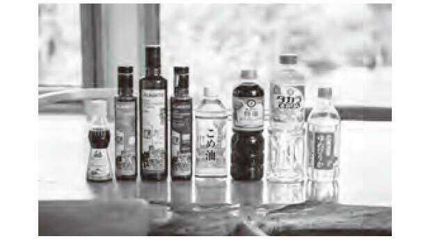
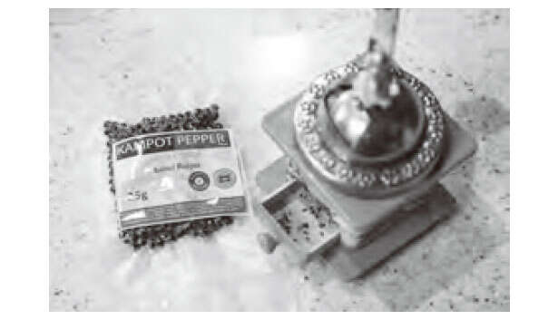

“生活在北方国家：通过家庭和园艺工作过上丰富的现代生活” (Kuro/KADOKAWA) 第 2 名 [共 10 次]
由 YouTube 频道“Kuro - Living in the Northern Country”创作的一本书，拥有超过 390,000 名订阅者。“生活在北方国家：通过家庭和园艺工作过上丰富的现代生活”（角川）。视频中默默出现的黑的67岁母亲和92岁祖母在本书中首次谈论他们的生活和秘密。在花园里努力工作、珍惜日常生活的“井井有条的生活”才是真正为未来播下种子。充满了北方大地安宁富足的生活暗示。请阅读这本书，寻找如何过上更健康生活的智慧。
*本文摘自Kuro的书《生活在北方国家：通过家庭和园艺工作过上丰富的现代生活》。
热爱并利用你能得到的东西
当人们在 YouTube 上观看我的烹饪视频和完成的菜肴时，他们会说“我钦佩你认真生活”，但这只是我长期以来一直在做的事情。这也不是一道精致的菜。
我是一名家庭主妇厨师，擅长用冰箱和冰柜里的东西做饭。我更困惑了，因为它受到的欢迎比我预期的要好。
我一生都没有特别自觉的有礼貌。
在我住的乡下小镇，能出去吃饭的餐馆就寥寥无几，想吃就只能自己做饭了。由于这些情况，我的出发点是用我能得到的东西来制作东西。
四十多年前，当我们开始结婚生活时，镇上的人口是现在的两倍。镇上有很多杂货店，而且当时规模更大，所以我认为比现在有更多的选择空间。我的厨艺也没有经验，做的菜也仅限于普通的，所以只能用普通的调料。
然而，由于人口减少，杂货店数量减少到两家。可用的调味料都是普通的，亚洲美食或香料咖喱不需要任何香料。住在城里的朋友和姐姐惊讶地说：“食材这么少。”
这可能会让我感到惊讶，但我对乡村生活感到有点复杂。但我也想，“如果它不存在，那就去做吧。这就像我从头开始做一些东西。”我想我是通过改变自己的思维方式来说服自己的。当了40多年的家庭主妇后，我的烹饪技术得到了提高，依靠的是我积累的经验和聪明才智。
看了剧和书，我爱上了《草原上的小屋》，这是一个美国西部拓荒时代一个家庭的故事。我觉得看到主角劳拉和她的家人生活在恶劣的环境和贫困中，设计食物和娱乐，创造一些不存在的东西真是太棒了。他们过着充实的生活，对我影响很大。
我认为我的一部分是在北海道的一个小镇上抚养孩子和做饭长大的。

《草原上的小房子》系列是我最喜欢的书之一。
在我作为家庭主妇和厨师的漫长历史中，我提高了自己的烹饪技巧，也遇到了我离不开的调味料，例如富国岛的 nuoc mam、Alberto 的橄榄油和 Guérande 的盐。我是通过网络订购的，但我选择的调味料有酱油、清酒、味醂、糖等，都是在当地能买到的。

根据菜肴的不同使用盐。

调味料是根据我们自己的审美意识来选择的。
购买时，请仔细阅读背面的食品标签。我尽可能选择不含防腐剂或添加剂的产品，但我也会检查成分的来源。比如酱油，作为原料的大豆最好是国产的，如果有使用北海道产大豆的产品，我会选择它。我的购买量很小，但我选择它们是希望它们能够帮助支持生产者。
另外，还要考虑价格。当我长大后需要大量的调味料时，我选择了最便宜的。但现在，夫妻俩住在一起了。我改变了思维方式，开始选择价格更高的产品。考虑到价格，我觉得他们对原材料和制造都很讲究。
调味料可能是不起眼的东西，但它们对菜肴的结果有影响。而且我每次做饭都会用它。我想拥有全国各地、世界各地的调味料，但日常烹饪所用的基本调味料有限。

柬埔寨胡椒“贡布”是在越南购买的磨坊中研磨的。
当地种植的新鲜蔬菜，方便获取的调味料，以及您选择的调味料。即使在农村，我也不断研究和创造可以使用这些食材完善的菜肴。